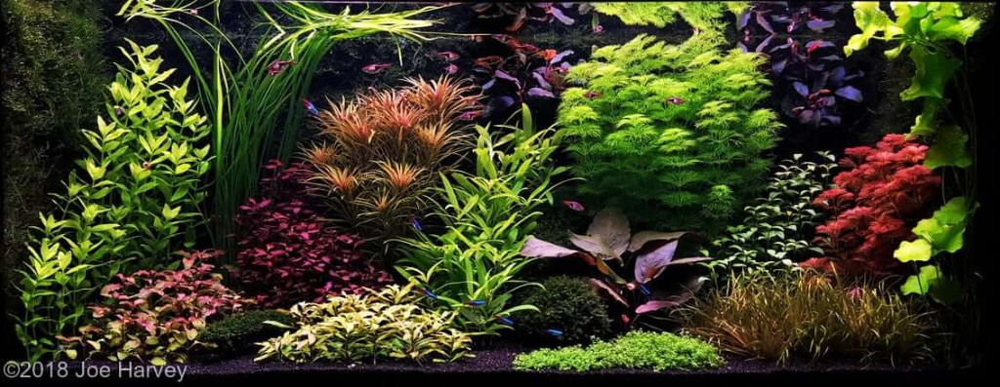
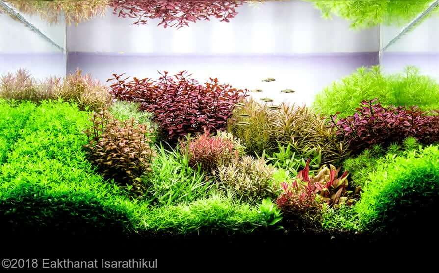
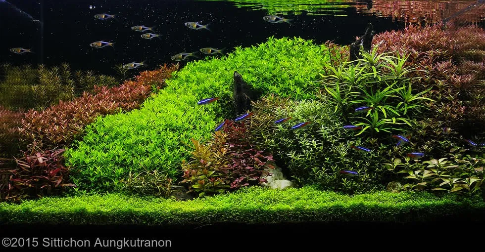
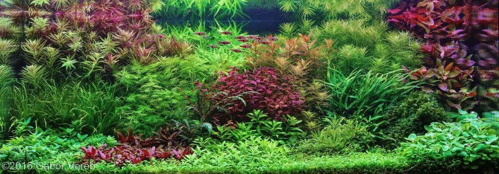

Tatlı su akvaryumlarında iki büyük akvaryum düzeni öne çıkar: Nature ve Dutch tarzı. Dutch Aquarium Aquascape en eskisidir; 1930’larda Hollanda’da, NBAT (Hollanda Akvaryumcular Derneği) ile popülerleşmiştir.

Special Features of the Dutch Aquarium
Dutch akvaryum tarzı odun, kaya ve sert dekor kullanımını zorunlu kılmaz; ana odak su bitkilerinin büyümesi ve düzenidir.
Geleneksel Dutch tanklar su altı bahçeleri gibidir ve belirli bir biyotopu taklit etmek zorunda değildir.
Bitkilerin yerleşimi şekil ve renkte birbirini tamamlayarak derinlik hissi yaratır. En iyi örnekler yoğunluk, kontrast ve ince renk kullanımıyla tanınır.

Design and Layout Techniques Applied to the Dutch Aquarium Style
En yaygın teknik teraslamadır. Tabanın %70’inden fazlası bitkiyle kaplı olmalıdır.
Kontrast renk, yükseklik ve doku ile sağlanır; gruplar arası boşluklar patika ve derinlik hissi verir.

Common Used Plants in the Dutch Aquarium
- Saururus cernuus, Lobelia cardinalis — Dutch street patikası
- Hygrophila corymbosa, Limnophila aquatica — büyük saplı bitkiler
- Cryptocoryne, Rotala, Alternanthera reineckii
- Java moss — gruplar arası kontrast

Recommended Fish for the Dutch Aquascaping Style
Büyük sürüler tercih edilir; Congo tetra veya melek balığı uygun seçeneklerdir.
Equipment
- LED veya floresan aydınlatma
- Dış filtre veya sump
- CO₂ — 15–20 ppm
- Kil / laterit substrat ve düzenli gübre
Maintenance Difficulties in the Dutch Aquarium
Sık budama gerekir; tank genelde en iyi ön cepheden izlenir.
Key aspects in the Dutch Aquarium Judging Contest Scoring
- Bitki ve balık sağlığı, su parametreleri
- Bitki seçimi, renk ve kontrast
- Balık uyumu ve genel düzen
- Ekipmanın görünür olmaması